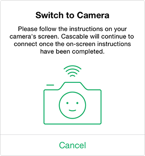

Bevor wir loslegen
- Prüfen Sie, ob Ihre Kamera von Cascable unterstützt wird.
- Prüfen Sie, ob die Firmware-Version Ihrer Kamera aktuell ist.
- Prüfen Sie, ob Sie die neueste Version von Cascable haben.
Deaktivieren der Bildgrößenanpassung
Standardmäßig passen Fujifilm Kameras die Größe Ihrer Fotos auf 3 Megapixel an, bevor sie per WLAN übertragen werden. Für ein bestmögliches Ergebnis mit Cascable empfehlen wir Ihnen, diese Option zu deaktivieren.
- Drücken Sie dazu auf Ihrer Kamera auf MENU und gehen Sie in das EINRICHTUNG und wählen Sie VERBINDUNGS-EINSTELLUNG.
- Wählen Sie FUNKEINSTELLUNGEN und ändern Sie VERKLEINERN auf AUS.
Wenn Verbindung fehlschlägt
Wenn Sie Ihre Fujifilm Kamera bereits mit anderen Apps über WLAN genutzt haben, können Verbindungsversuche von Cascable eventuell zurückgewiesen werden. Um dies zu beheben, drücken Sie beim Aktivieren des WLAN an Ihrer Kamera auf OK - CHANGE, um ein neues Pairing zu ermöglichen. Starten Sie Cascable neu. Die Verbindung sollte nun hergestellt werden können.

Cascable mit Ihrer WLAN-Kamera verbinden
- Drücken Sie die Menu-Taste auf Ihrer Kamera und wechseln Sie zu AUFNAHME-MENÜ.
- Im AUFNAHME-MENÜ Menü gehen Sie auf DRAHTLOS-KOMM. und drücken auf OK.
- Hinweis: Viele Fujifilm Kamera haben eine eigene WiFi-Taste oder bieten die Konfiguration einer Taste zum Aktivieren von WiFi an. Schauen Sie im Handbuch Ihrer Kamera nach.
- Die WLAN-Funktion wird nun aktiviert. Prüfen Sie nun, ob Ihr iOS-Gerät und Ihre Kamera mit demselben WLAN-Netzwerk verbunden sind, und starten Sie Cascable.
- Wenn in den Einstellungen von Cascable die Option „Automatisch verbinden“ gewählt ist, wird die App Ihre Kamera nach wenigen Sekunden automatisch entdecken und sich damit verbinden. Anderenfalls tippen Sie auf das Verbindungssymbol oben auf dem Display und dann auf Verbinden neben den Namen Ihrer Kamera.
- Bei der erstmaligen Verbindung muss Ihre Kamera mit der App gekoppelt werden (Pairing). Dazu zeigt Cascable diesen Dialog an:

Pairing-Dialog von Cascable.
- Zum Fortfahren drücken Sie auf Ihrer Kamera OK. Damit bestätigen Sie die Pairing Anfrage von Cascable.
- Das war’s — Sie sind verbunden!
Immer noch Probleme?
Wenn es immer noch nicht funktioniert, gehen Sie bitte auf die Cascable Webseite, damit wir Ihnen weiterhelfen können.